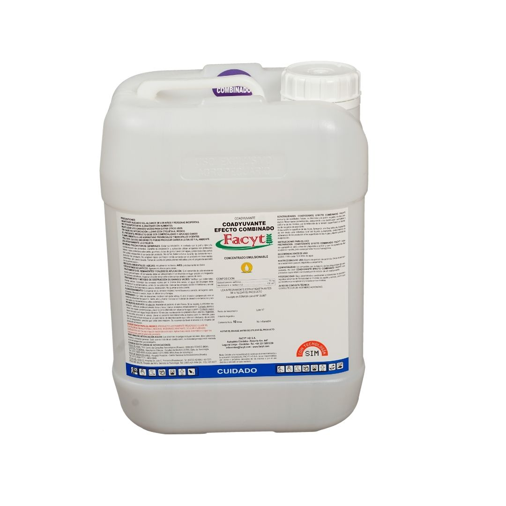

Coadyuvante especialmente diseñado a base de tensioactivo + sustancias quelantes, ideal para utilizar en aguas con alto contenido de Dureza Total. Aumenta la eficacia de los herbicidas, logrando un control más rápido de malezas. La formulación maneja los cationes que reducen la eficacia de los agroquímicos, siendo apto para usar junto a herbicidas y asegurar aplicaciones de calidad a bajo costo por hectárea.
Características:
Presentación: Envase de 10 litros.
Dosis Recomendada: 400 cc cada 1000 litros de agua para dureza total de 200-400 ppm. 400-1000 cc cada 1000 litros de agua para dureza total de 400-1000 ppm.